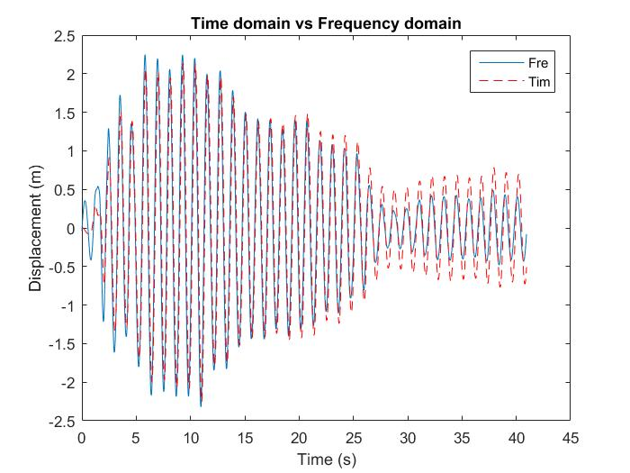

Earthquake record and its brothers
背景
有没有人想过一个问题，如果构造一个频谱特性与原始地震波y0完全相同的时程y1，那么y0与y1的反应谱是否一致呢？
这个问题的本质就是，在线弹性动力系统中，输入的频谱特性是否决定了输出。其实这么说不见得严谨，因为当我们在研究地震波等输入的频谱时，我们往往已经把虚部去除了，而虚部的信息的遗失直接导致了相位角信息的遗失，换言之，上面所说的y0与y1只是傅里叶幅值谱完全相同而已。
先从理论上做一个简单地论述。我们知道，对于经典的动力问题，其平稳解的功率谱密度函数可以通过输入的功率谱密度函数（Power Spectral Density function-PSD），与频响函数（Frequency Response function-FRF）得到，而平稳相应也可以通过输入的傅里叶变换与FRF得到。
这里通过数值模拟进行一个简单的对比，单自由度体系，分别采用Newmark-Beta和频域方法求解。这里注意一个技巧，在做数值模拟时，傅里叶变换事实上都是离散傅里叶变换，而离散傅里叶变换的处理应该注意时程的时间间隔与采样频率之间的关系，这决定了傅里叶变换出来的结果，其最大频率对应的数值。
对单自由度体系，采用频响函数的计算方法可以用如下公式表示：
$${F_F}\left( \omega \right) = FFT\left( {f\left( t \right)} \right)$$
$${X_F}\left( \omega \right) = {F_F}\left( \omega \right)H\left( \omega \right)$$
$$x\left( t \right) = Real\left[ {InvFFT\left( {{X_F}\left( \omega \right)} \right)} \right]$$
采用频响函数和Newmark-Beta法计算可以得到如下对比图：

值得注意的是，上述计算本质上完全是数值的，并非解析解，不过，在进行FFT时，我采用的是包含了实部和虚部的输入信号与频响函数。过程中唯一可能造成信息遗失的就是在做逆变换时，只考虑了实部。这算是对于上述问题的初步探索，也是问题的背景。
Mr. Earthquake record, where is your brother?
地震波的兄弟可以认为是基因（频谱）相似的另一条时程，呢么怎么表现两兄弟的差异呢，y1只包含y0的频率特征，其相位角特征则完全是随机的。类似于谱表达方法（Spectral Representation）。这里计算的公式可以简单描述如下：
$${Y_{0F}}\left( \omega \right) = FFT\left( {{y_0}\left( t \right)} \right)$$
$${y_1} = \sum\limits_{j = 1}^{{N_\omega }} {{Y_{0F}}\left( {{\omega _j}} \right)\cos \left( {{\omega _j}t + {{\tilde \phi }_j}} \right)}$$
好现在地震波的兄弟找到了，那么他俩像不像呢？
由于平稳性本身无法在原始时程中保证，所以两者看卡来只在数量级上类似。但是我们看两者的傅里叶幅值谱：

几乎完全一致。那么两者的反应谱对比怎么样呢？
在周期较小的情况下，两者的反应谱比较接近，但是对于大周期都表现出了比较差的效果，这与地震波本身的低频信息较少有关。